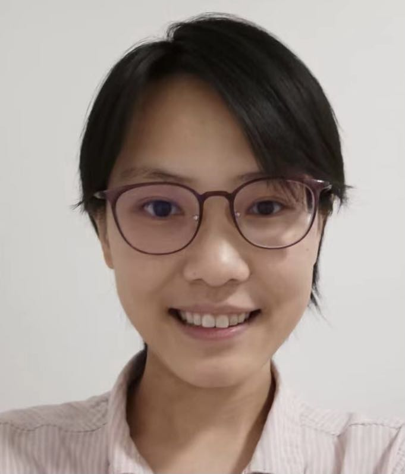

Arun's Data Analytics (ADA) Lab @ UCSD
Introduction
As the scale, complexity, and variety of data grows (aka Big Data), the use of machine learning (ML) and artificial intelligence (AI) techniques to make sense of, and interact with, such data — collectively called predictive data analytics, statistical data analytics, ML-based data analytics, or simply advanced data analytics (also ADA!) — is increasingly critical for data-driven applications in the enterprise, Web, science, and other domains. Alas, building and deploying ML/AI-powered data analytics applications still involves far too many bottlenecks that slow down the lifecycle of such applications, raise costs, frustrate many application users, and in some cases, make high-quality data-driven decision making almost impossible.
The mission of the ADALab is to democratize advanced data analytics by making it dramatically easier, faster, and cheaper to build and deploy ML/AI-powered data analytics applications throughout their lifecycle.
We are an academic research group headed by Dr. Arun Kumar, and we are a part of the Department of Computer Science and Engineering (CSE) and the Halicioglu Data Science Institute at the University of California, San Diego (UCSD). We are members of CSE's Database Lab and affiliate members of the Artificial Intelligence Group and Center for Networked Systems.
Overview of Our Research
The ADA lifecycle typically revolves around data scientists or ML engineers. Based on conversations with dozens of such data-related professionals, we abstract the ADA lifecyle as follows. After identifying the tasks where ML/AI might benefit their application in terms of business impact or scientific insights, the data scientist steers three main processes, as illustrated below:
Data Sourcing: Identify, collect, clean, and organize data in to a form that can be used to train ML models.
Model Building: Perform model selection with the data to obtain desired prediction functions.
Model Deployment: Integrate trained prediction functions with the application and oversee lifecycle.
 |
The ADALab's approach to democratizing advanced data analytics involves accelerating the ADA lifecyle by removing bottlenecks for both the efficiency of the systems and algorithms involved and the productivity of the data practitioners involved.
Towards this grand goal, we synthesize and innovate upon the fields of data management, ML/AI, systems, and human-computer interaction. Our projects target all parts of the ADA lifecycle, and our work spans the whole gamut of building new data systems, algorithms, empirical analysis, and theoretical analysis. All of our systems are released as open source software.
We also enjoy interacting with, and learning from, practitioners — data scientists, ML/software engineers, and domain scientists — and working with them to help them adopt our systems and ideas.
The list of current ADALab projects is here: Projects.
The list of ADALab publications is here: Publications.
For a summary of our current research, you can also read this one-pager, listen to this podcast, or watch this talk video.
Recent ADALab News
New! 12/24: Our SNAILS paper on defining, measuring, and benchmarking the impact of database schema naturalness on LLM-based NL to SQL is accepted to ACM SIGMOD 2025!
New! 8/24: Arun receives a VLDB Early Career Research Contributions Award! This is the first time this award goes to work in the area of deep learning systems.
7/24: Our paper on using LLMs to augment query benchmark sets for multi-model analytics, part of the AWESOME project, is accepted to ACM CIKM 2024!
6/24: Congrats to Yuhao on his ACM SIGMOD Distinguished PC Member award! Arun also received an ACM SIGMOD Distinguished Associate Editor award.
Full list of lab news items here: News.
Members
Faculty
 |
Arun Kumar |
Graduate Students
Kyle Luoma |
|  | Xiuwen Zheng |
 |
Animesh Kumar |
Alumni
Kabir Nagrecha, PhD, CSE, UCSD, 2024. First employment: Netflix.
Yuhao Zhang, PhD, CSE, UCSD, 2023. First employment: Databricks.
Pradyumna Sridhara, MS, CSE, UCSD, 2023. First employment: UCSD.
Vignesh Nanda Kumar, MS, CSE, UCSD, 2023. First employment: Service Now.
Supun Nakandala, PhD, CSE, UCSD, 2022. First employment: Databricks.
Vraj Shah, PhD, CSE, UCSD, 2022. First employment: IBM Research Almaden.
Liangde Li, MS, CSE, UCSD, 2022. First employment: TigerGraph.
Tara Mirmira, MS, CSE, UCSD, 2022. First employment: PhD at UCSD.
Advitya Gemawat, BS, HDSI, UCSD, 2021. First employment: Microsoft NERD AI.
Side Li, MS, CSE, UCSD, 2021. First employment: Google.
Kabir Nagrecha, BS, CSE, UCSD, 2021. First employment: PhD at UCSD.
Shaoqing Yi, BS, HDSI and Math, UCSD, 2021. First employment: PhD at UC Berkeley.
Kevin Yang, BS, CSE, UCSD, 2020. First employment: MS at UPenn.
David Justo, MS, CSE, UCSD, 2019 (Co-advisor: Nadia Polikarpova). First employment: Microsoft.
Lingjiao Chen. MS, CS, UW-Madison, 2018 (Co-advisor: Paraschos Koutris). First employment: PhD at Stanford.
Side Li. BS, CSE, UCSD, 2018. First employment: Amazon.
Anthony Thomas. MS, CSE, UCSD, 2018. First employment: PhD at UCSD.
Mingyang Wang. MS, CSE, UCSD, 2017. First employment: Amazon.
Sponsors
We thank the following organizations for their generous support of our research. Any findings or opinions expressed in our research publications or articles are our own and do not necessarily reflect the views of any of these organizations.
 |
Past sponsors: Hellman Fellows Fund, NVIDIA, and Opera Solutions.
About our Lab's Name
Apart from being a convenient acronym, it is also a tribute to Ada Lovelace, widely regarded as the first computer programmer. This tribute is part of our lab's commitment to help foster a diverse and inclusive community in computing, as enshrined in the UCSD Principles of Community, for people from all backgrounds regardless of race, ethnicity, sex, gender identity, sexual orientation, age, disability status, nationality, religion, or political persuasions.